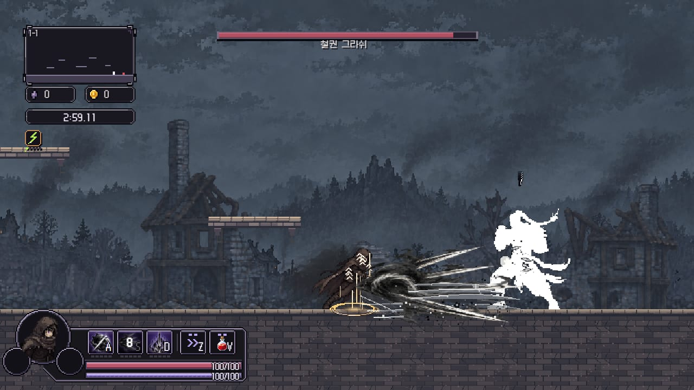
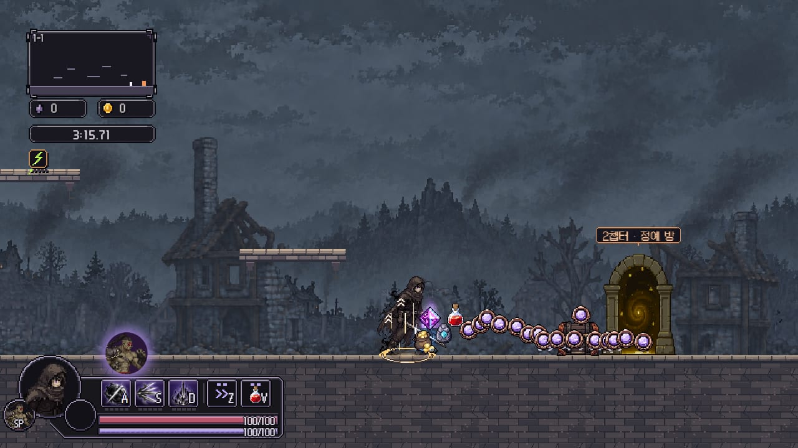
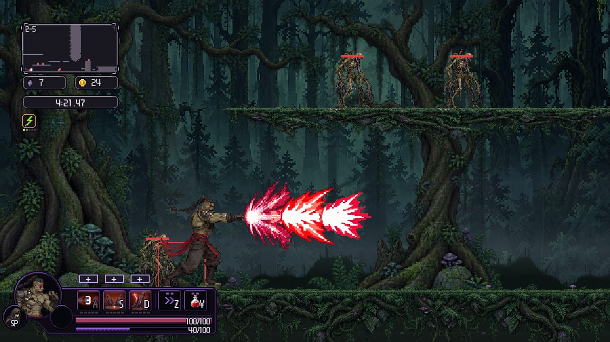

ABOUT
보스를 쓰러뜨리면 그 보스로 싸웁니다
보스를 처치하면 그 보스의 그림자를 흡수하고, 이후에는 그 보스로 변신(의태)해 같은 기술을 쓸 수 있습니다. 강한 적의 기술을 직접 써 보고 싶다는 생각에서 출발한 규칙이고, 세계관도 이 규칙에 맞춰 만들었습니다.




원정은 광장에서 출발해 방을 하나씩 지나며 보스를 잡는 구조입니다. 3챕터까지 공개했고 보스 16명, 유물 140개(시너지 10종)가 있습니다. 운영하면서 족쇄의 원정, 인내의 탑, 심연의 탑, PvP, 그몽어스, 생존 모드, 라인 전쟁을 차례로 추가했습니다.